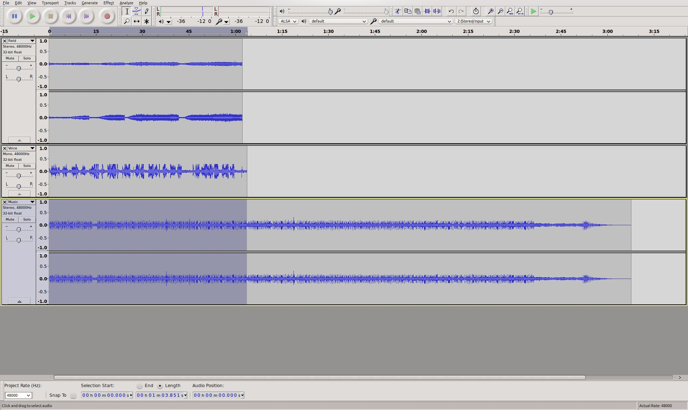
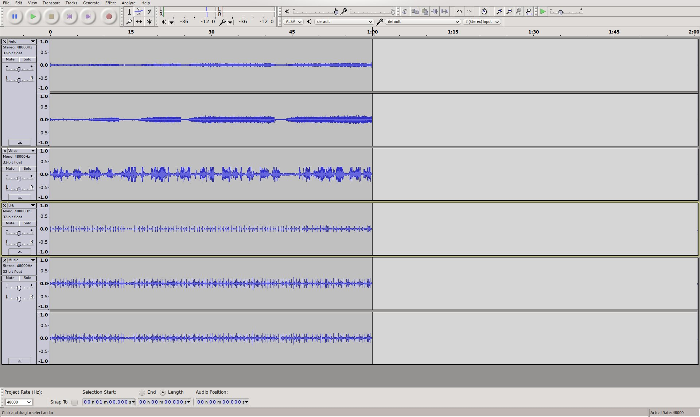
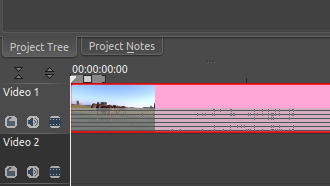
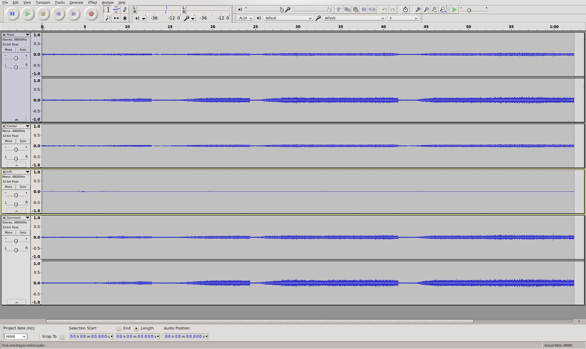
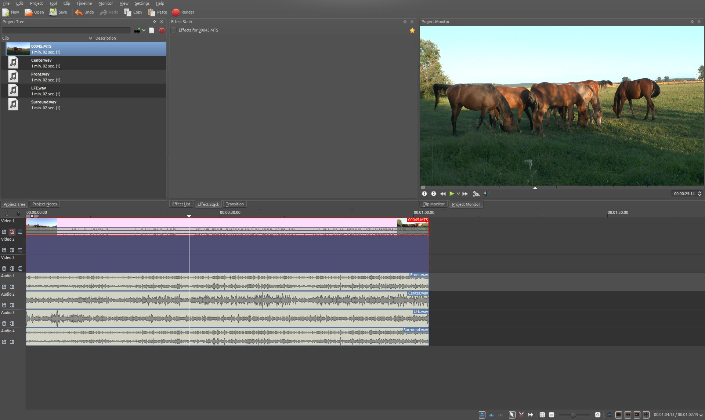
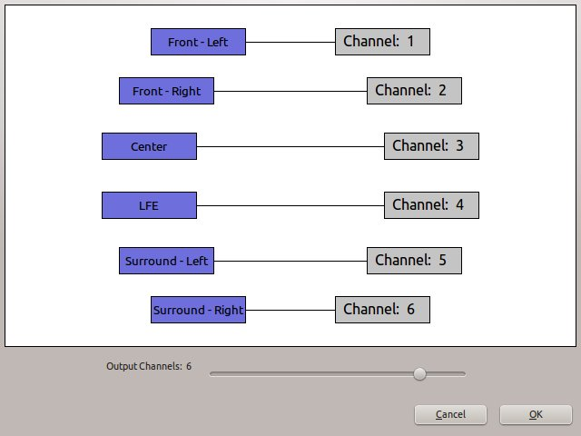

Editing Surround Sound with Kdenlive¶
Contents
At the time of writing, Kdenlive only supports rendering a project to a video containing stereo audio. It is not possible to render to more audio channels or to explicitly map audio tracks to channels in the rendered audio. In order to edit and create surround sound, some manual steps, including external tools, are required.
This guide is using a 6 channel 5.1 surround sound as example.
External Tools Used Here¶
Note
Kdenlive uses ffmpeg, while on (k)ubuntu, ffmpeg is deprecated and avconv is used instead. So these (and possibly other) distributions already have avconv installed.
Creating New Surround Sound¶
This guide describes one possible workaround using Audacity to create and render a 5.1 surround sound audio track that can be added to the video rendered by Kdenlive.
Note
More advanced features such as surround panning (i.e. let a sound move from rear to front) are beyond the capabilities of Audacity - but it is possible to create similar effects manually.
Create and Edit Surround Sound with Audacity¶
The following example of a simple 5.1 surround sound is used in this guide:
Some original field recording from the front (stereo)
Some voice from the (front) center (mono)
Some music from the rear (stereo)
If, like in this example, some original field recording from a video clip is supposed to be used to create the surround sound audio track, it can be easily extracted using Kdenlive with from the context menu of the clip. This creates a WAV audio file in the same folder where the video clip is located.
The audio clips to be used in this example are:
Field.wav (stereo) for Front L+R
Voice.wav (mono) for Center
Music.mp3 (stereo) for Surround L+R (rear)
In a new Audacity project, they can be imported in the above order with , the project should now look something like this:
The channel mapping for 5.1 surround sound is:
1 - Front Left
2 - Front Right
3 - Center
4 - LFE
5 - Surround Left
6 - Surround Right
Note
LFE (Low Frequency Effects) is often referred to as “subwoofer channel”, which is not quite correct. A surround sound speaker setup is perfectly valid without subwoofer. In this case the surround sound system will redirect the LFE channel to “large” speakers, usually the front speakers.
The stereo track “Field” can now be mapped to Front L+R, “Voice” to Center and “Music” to Surround L+R. There is just one problem: the Surround (rear) speakers of a surround speaker system are usually “small” and not able to reproduce low frequencies. So it would be necessary to map the low frequency range of the “Music” track to the LFE channel, otherwise the music might sound a little “thin”.
To do this, the “Music” track can simply be duplicated with after selecting it, and then from the context menu of the third track. Then one of the two mono tracks can be deleted; the other one can be renamed to “LFE”.
Now the “Equalization…” effect could be used to cut off frequencies above around 100Hz from the “LFE” track, and reverse, cut off frequencies below around 100Hz from the “Music” track.
Note
Creating technically perfect surround sound is a science all its own and thus beyond the scope of this guide - please refer to respective resources on the web for details.
What remains for now is to make sure that the surround sound track has the same length as the video track it should be added to. The video track used in this example has a length of 1:00 minute, so the lengths of the audio tracks in Audacity are adjusted accordingly:
The Audacity project should now look something like this:
The next thing to do is to export the project to a multichannel 5.1 surround sound audio file. The format used here is AC-3 (Dolby Digital).
Before exporting, Audacity needs to be configured to allow exporting to a multichannel audio file: In , under , select “Use custom mix (for example to export a 5.1 multichannel file)”.
The project can now be exported into a 5.1 surround sound audio file:
Select
Provide a name for “Name” and select “AC3 Files (FFmpeg)”
Click “Options…” and choose “512 kbps” as “Bit Rate”
The “Advanced Mixing Options” dialog should show up. The number of “Output Channels” should be 6 and the channel mapping should already be correct:
The result of the export should be an .ac3 file which is playable with e.g. **VLC* or Dragon Player.
Muxing Video and Audio Together¶
The final step is to add the surround sound audio track to the video track, assuming the video was rendered without audio.
Note
When muxing audio and video files into one file, the actual streams are just copied, and not transcoded. So there is no quality loss to either the audio or the video streams. Also, because the streams are just copied, muxing is very fast.
Assuming the video track was rendered to “Video.mkv” and the surround sound was exported to “5.1.ac3” the command to mux both to “Video-5.1.mkv” with avconv would be:
avconv -i Video.mkv -i 5.1.ac3 -c copy -map 0:0 -map 1:0 Video-5.1.mkv
The result should be an MKV video containing a Dolby Digital 5.1 surround sound audio track.
Editing Existing Surround Sound¶
When adding a clip with more than two channels to a project, Kdenlive creates an audio thumbnail that correctly shows all audio channels:
The clip can be edited and (audio) effects applied to it, and all appears to work just fine - but once rendering the project, it turns out that the audio track in the resulting video file is 2 channels (stereo) only.
The following steps provide a manual workaround for this issue.
Extract and Split the Audio Track¶
The first step is to extract the audio track from the video clip. This can be done in Kdenlive with from the context menu of the clip. This creates a WAV audio file in the same folder as where the video clip is located.
The extracted WAV audio file can then be opened in Audacity, it should show all 6 channels, these are:
1 - Front Left
2 - Front Right
3 - Center
4 - LFE
5 - Surround Left
6 - Surround Right
Note
LFE (Low Frequency Effects) is often referred to as “subwoofer channel”, which is not quite correct. A surround sound speaker setup is perfectly valid without subwoofer. In this case the surround sound system will redirect the LFE channel to “large” speakers, usually the front speakers.
The idea now is to split the surround sound into four separate (stereo/mono) audio files that Kdenlive can handle:
Front (stereo)
Center (mono)
LFE (mono)
Surround (stereo)
First, Audacity needs to be configured to not always export to stereo audio files: In , under , select “Use custom mix (for example to export a 5.1 multichannel file)”.
Now, tracks 1+2 and 5+6 should be turned into stereo tracks by choosing from the context menu of the 1st and the 5th track, respectively. This should result in 4 tracks, two stereo and two mono.
Next, the 4 tracks should be renamed to “Front”, “Center”, “LFE” and “Surround” starting from the top, using from the context menu of each track.
The tracks now look like this:
After all this hard work, exporting the four tracks to four separate audio files is easy with . Use “WAV” as “Export format”, the rest of the settings should already be okay: “Split files based on: Tracks” and “Name files: Using Label/Track name”.
The “Edit metadata” dialog might pop up for each track. It is fine to just say “OK”. At the end there should be a confirmation dialog and four audio files should have been exported: “Front.wav”, “Center.wav”, “LFE.wav” and “Surround.wav”.
Import Audio Tracks into Kdenlive¶
The previously created audio files can now be added to the Kdenlive project using .
Since there are only two audio tracks in a project by default, it is necessary to add two more using before adding the four audio tracks to the timeline.
The next thing to do is to group the four audio tracks with the video clip by selecting all of them and then choosing .
Note
Don’t forget to mute the original audio track in the video clip if necessary!
The Kdenlive project should now be ready for the usual editing, like cutting clips and adding effects, and should look something like this:
Rendering the Project¶
Since it is not possible to render the project with a surround sound audio track, some manual steps are necessary to work around this.
First, the video track needs to be rendered without audio. This is simply done by rendering the project as it would normally be done, but without audio, by deselecting the “Export audio” checkbox.
Then, each of the four surround sound audio tracks “Front.wav”, “Center.wav”, “LFE.wav” and “Surround.wav” needs to be rendered into a separate audio file. For each of them, do the following:
Mute all other audio tracks
Enter a respective file name for “Output file”
Select “Audio only” as “Destination”
Select profile “WAV 48000 KHz”
Make sure “Export audio” is checked
Note
Unfortunately, the mono tracks “Center.wav” and “LFE.wav” are rendered as stereo tracks, and there seems to be no way to avoid this. But this can be handled later in Audacity.
Compose a Surround Sound Audio File¶
Now the separate audio tracks rendered by Kdenlive need to be “merged” into a single multichannel 5.1 surround sound audio file. This is again done in Audacity:
Import “Front.wav”, “Center.wav”, “LFE.wav” and “Surround.wav” (in this order!) using
“Center” and “LFE” are now stereo, which is not what is needed. This can be fixed by selecting from the context menu of each track, and deleting one of the two resulting mono tracks.
Eventually, there should be four tracks in the Audacity project:
Front (stereo)
Center (mono)
LFE (mono)
Surround (stereo)
The project can now be exported into a 5.1 surround sound audio file:
Select
Provide a name for “Name” and select “AC3 Files (FFmpeg)”
Click Options… and choose “512 kbps” as “Bit Rate”
The Advanced Mixing Options dialog should show up. The number of Output Channels should be 6 and the channel mapping should already be correct:
The result of the export should be an .ac3 file which is playable with i.e. **VLC* or Dragon Player.
Muxing Video and Audio Together¶
Since video and audio was rendered separately, both need to be multiplexed into a single file containing both the video and audio stream.
Note
When muxing audio and video files into one file, the actual streams are just copied, and not transcoded. So there is no quality loss to either the audio or the video streams. Also, because the streams are just copied, muxing is very fast.
Assuming the video track was rendered to “Video.mkv” and the surround sound was exported to “5.1.ac3”, the command to mux both to “Video-5.1.mkv” with avconv would be:
avconv -i Video.mkv -i 5.1.ac3 -c copy -map 0:0 -map 1:0 Video-5.1.mkv
The result should be an MKV video containing a Dolby Digital 5.1 surround sound audio track.